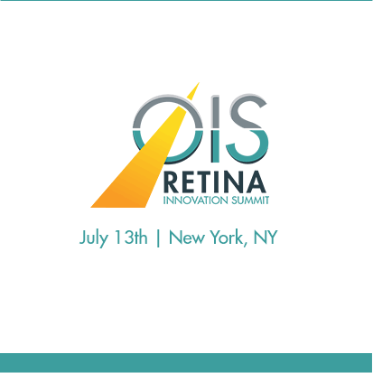

Titanium Macular Buckle
Also known as the Staphyloma Support Device (SSD)

Winner of Winning Pitch Challenge
The Titanium Macular Buckle came in first place in the Winning Pitch Challenge.

LA Eye, LLC
LA Eye, LLC has the patented product, Staphyloma Support Device (SSD), also known as Titanium Macular Buckle, in development for application in various stages of pathologic myopia. SSD is designed to address the anatomic root cause of the problem in pathologic myopia helping to reshape the contours of the posterior sclera to a more natural form and reduce the axial length so to treat or prevent blinding myopic maculopathy. An additional gain appears to be the reduction of the refractive error at least up to 18 diopters.

Retina Innovation Summit
The Titanium Macular Buckle will be presented on July 13 in New York City.